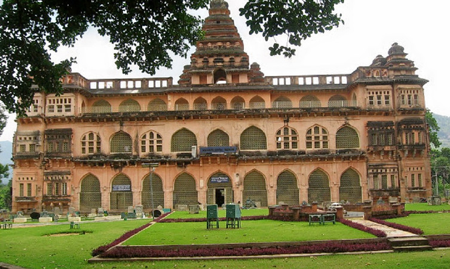

Kasargod
Kasargod is one of the 14 districts in the southern Indian state of Kerala.It is the
northernmost district of Kerala and is included in the North Malabar region.
It is also known as Saptha Bhasha Sangama Bhoomi (The land of seven languages), as seven languages namely
Malayalam, Tulu, Kannada, Marathi, Konkani, Beary, and Urdu are spoken, unlike the other districts of
Kerala.
Places to Visit in Kasargod
- Bekal Fort.
- Parappa Wildlife Sanctuary.
- Cheruvathur.
- Mallikarjuna Temple.
- Chandragiri Fort.

The 300 years old defensive mechanism which is the largest and well-preserved fort makes it one of the best Kasaragod tourist place. You can get an enthralling view of the mesmerizing Arabian sea from the fort’s observation tower which was once used to fire the cannons! The impressive strength of the fort brings a herd of tourists to witness the glorious past and be awestruck. Visit an old mosque near this fort to dive deeper into history.

A paradise for nature lovers and a fine ranked in the list of tourist places in Kasaragod. It is a natural habitat of some underrated fauna like a slow turtle, the prickly porcupine, Malabar hornbill, Slender loris, and the cute wild jungle cat. If wilderness attracts you, this locale is a must visit for some great wildlife photography. Hike around the sanctuary and click around some rare species.

Kuttamath Nagar legally is renowned for marking the origin of an extraordinary artist composing melodic shows and sonnets. If you do appreciate the abstract art this place is for you. Individuals from close by spots rush in amid the pinnacle seasons for an excursion and appreciate the day, a long way from city’s dissonance. This quaint little town of Kasaragod is just a perfect destination if you wish to go away from the hustle bustle of the cities!

A temple dedicated to Lord Shiva is situated in the center of the Kasaragod city. The mesmerizing aura of
this temple stops the passerby to sit and spend some time in the premises watching the ritual performances
which are a part of common daily routine.
This edifice was built by the Iyer kings and is one of the most revered tourist places in Kasaragod. If
the fine art attracts you then you will be amazed to know, that the walls of this spiritual site are
adorned with spellbinding paintings.

Drowned in history and residing on hill ruins this fort offers a perfect sunset view to its visitors. A serene locale with a panoramic view on display is a picture perfect location. This bizarre fort is squarish in shape and is seated beautifully 150 feet above the sea level. From this place, you can take the bird’s eye view of the city, and soothe your senses.